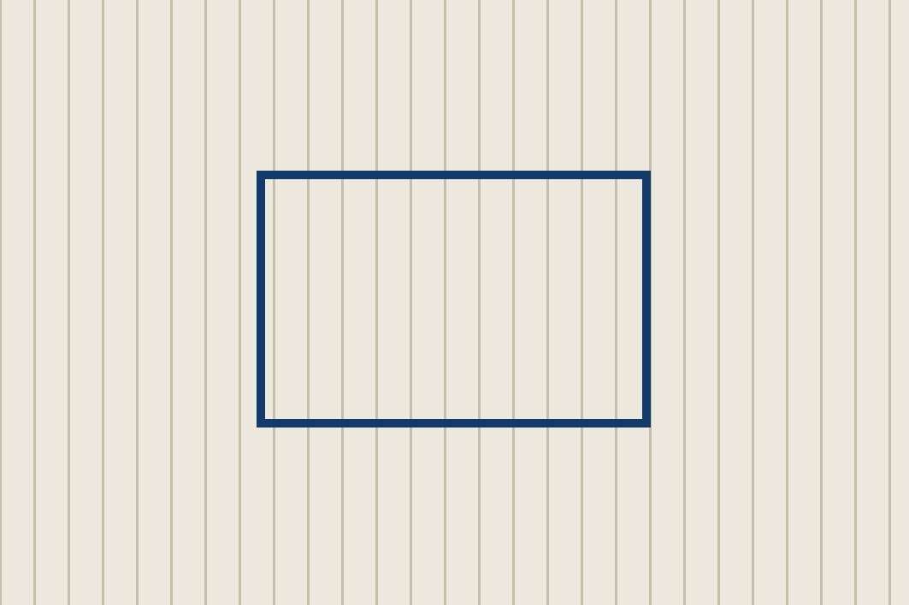

01
从早读到项目课，开放日欢迎家长走进教室，安静旁听。
每个片段都对应一项可以在家延续的小习惯。
早读从八点开始，孩子们先用中文朗读，再用英语复述同一个故事1。老师记录每个孩子愿意开口的次数，而不是只看对错。
项目课上，三年级正在研究校园里的植物。他们用两种语言写观察笔记，并在周五向低年级同学展示。
课间活动安排在操场和图书馆两处。下雨时，体育老师会把活动改到室内体育馆。

开放日：11 月 8 日（周六）9:00—11:30，小学部一楼报到。
1 复述可以不完整，鼓励开口比纠正更重要。
“安全感先于表达。孩子觉得被听见，才会愿意多说一句。”
预约旁听：开放日前三天致电招生办 0571-8888 6666。